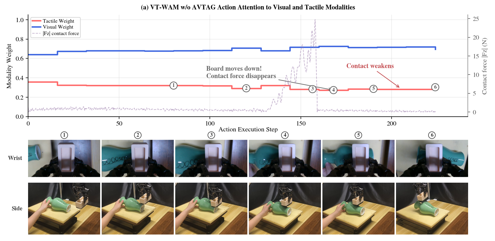
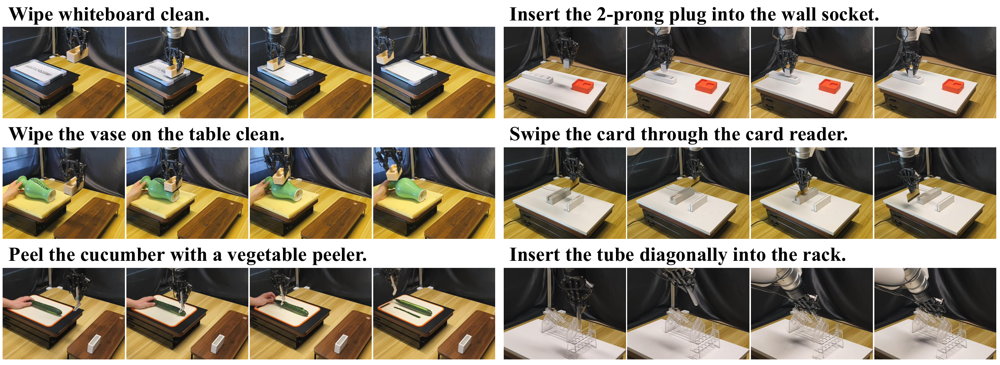
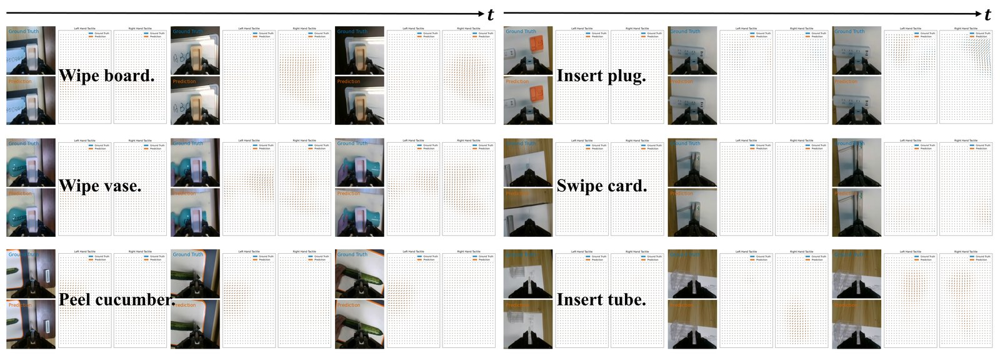

w/o AVTAG
Visual-dominant attention remains nearly static. The contact loss is hard to infer from the wrist view alone, so the policy fails to re-establish contact.

VT-WAM couples action prediction with tactile deformation dynamics, allowing temporally sparse contact information to guide action generation in contact-rich manipulation.
VT-WAM jointly learns future visual prediction, tactile deformation prediction, and action prediction through modality-specific experts, Asymmetric MoT Attention, and contact-gated AVTAG.

VT-WAM achieves 71.67% average success across six real-world contact-rich tasks, compared with 45.00% for Fast-WAM and 35.83% for OmniVTLA.

| Method | Surface-Interaction Tasks | Constrained Insertion Tasks | Average | ||||||
|---|---|---|---|---|---|---|---|---|---|
| Wipe Board | Wipe Vase | Peel Cucumber | Avg. | Insert Plug | Swipe Card | Insert Tube | Avg. | ||
| DP + Tactile | 30% | 20% | 25% | 25.00% | 5% | 35% | 15% | 18.33% | 21.67% |
| RDP | 45% | 60% | 40% | 48.33% | 15% | 35% | 10% | 20.00% | 34.17% |
| π0.5 | 40% | 35% | 35% | 36.67% | 30% | 45% | 10% | 28.33% | 32.50% |
| OmniVTLA | 45% | 30% | 25% | 33.33% | 40% | 35% | 40% | 38.33% | 35.83% |
| Fast-WAM | 70% | 55% | 45% | 56.67% | 20% | 55% | 25% | 33.33% | 45.00% |
| VT-WAM | 90% | 85% | 70% | 81.67% | 60% | 70% | 55% | 61.67% | 71.67% |
VT-WAM predicts wrist-camera observations together with tactile deformation fields, showing that the tactile expert learns meaningful contact deformation dynamics.

Ablations on wipe vase and insert tube evaluate two design questions: how to incorporate tactile dynamics into action prediction, and whether AVTAG improves real-world success.
| Model | Description | Wipe Vase | Insert Tube |
|---|---|---|---|
| M0 | Fast-WAM | 55% | 25% |
| M1 | M0 + Sym. (T Seq.) | 65% | 40% |
| M2 | M0 + Asym. (T0) | 40% | 30% |
| M3 | M0 + Asym. (T Seq.) | 70% | 50% |
| M4 | VT-WAM: M3 + AVTAG | 85% | 55% |
This example isolates a contact-disturbance case. When the supporting plane moves downward, the wrist-camera view changes only subtly, so the policy must rely on tactile information to identify and correct the loss of contact.
Visual-dominant attention remains nearly static. The contact loss is hard to infer from the wrist view alone, so the policy fails to re-establish contact.

Tactile attention increases during contact. The policy uses tactile information to re-establish contact with the vase surface and complete the wiping task.

Figure 4. Attention and force traces during the vase-wiping disturbance. Red and blue curves denote relative tactile and visual attention weights; the dashed curve denotes contact force.
Select a task to compare representative OmniVTLA, Fast-WAM, and VT-WAM demos.
Failure
Partial Success
Success
Partial Success
Partial Success
Success
Failure
Partial Success
Success
Failure
Failure
Success
Failure
Success
Success
Failure
Failure
Success
@article{vtwam2026,
title = {VT-WAM: Visual-Tactile World Action Model for Contact-Rich Manipulation},
author = {Shuai Tian and Yupeng Zheng and Yuhang Zheng and Songen Gu and Yujie Zang and Yuxing Qin and Weize Li and Haoran Li and Wenchao Ding and Dongbin Zhao},
journal = {Under Review},
year = {2026}
}